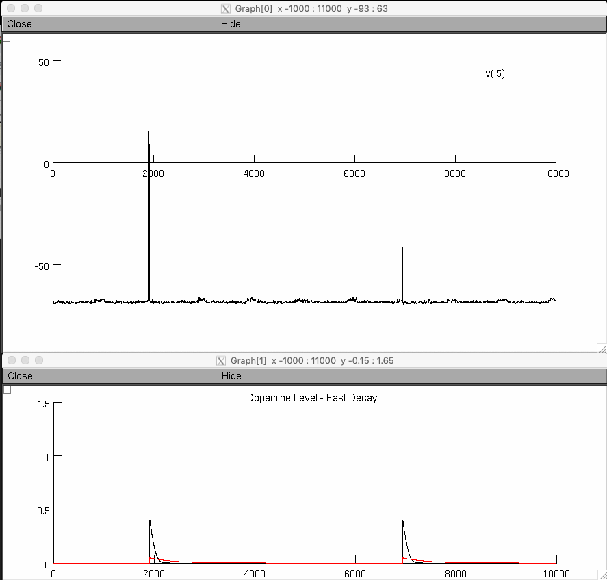

This is the readme for the model associated with the paper:
Enrico P, Migliore M, Spiga S, Mulas G, Caboni F, Diana M (2016) Morphofunctional alterations in ventral tegmental area dopamine neurons in acute and prolonged opiates withdrawal. A computational perspective. Neuroscience 322:195-207. doi: http://dx.doi.org/10.1016/j.neuroscience.2016.02.006
We used a biophysical computational model of dopamine (DA) neuron of the Ventral Tegmental Area (VTA) of the rat to clarify how morphine withdrawal-induced neurochemical and morphological changes could affect the electrophysiological behavior of these neurons. The model findings suggest how and to what extent a change in the balance of GABA/GLU inputs can take into account the experimentally observed hypofunction of VTA DA neurons during acute and prolonged withdrawal, whereas morphological changes may play a role in the increased excitability of VTA DA cell to opiate administration observed during opiate withdrawal.
Higlights
The model was written in NEURON which is required and freely available from http://www.neuron.yale.edu
The simulation file DA_release_final.hoc can be used to reproduce the traces in Fig.2a, 2b, and 2c of the paper
To start the simulation:
If NEURON is installed and your browser is properly configured you can auto-launch the model directly from the modeldb entry (click the auto-launch button) which starts mosinit.hoc automatically after compiling the mod files. mosinit.hoc is configured to run DA_release_final.hoc
After a brief time you should see figures that includes one similar to figure 2 (middle) in the paper:

---
Under unix systems:
Compile the mod files use the command "nrnivmodl" and run one of the simulations with the command: nrngui filename
---
Under Windows systems:
Compile the mod files use the "mknrndll" command. A double click on one of the simulation files will open the simulation window.
---
Under MAC OS X:
Drag and drop the extracted folder onto the mknrndll icon. Drag and
drop the mosinit.hoc onto the nrngui icon.
---
If you need more help building/running the simulation please consult this:
https://senselab.med.yale.edu/ModelDB/NEURON_DwnldGuide.cshtml